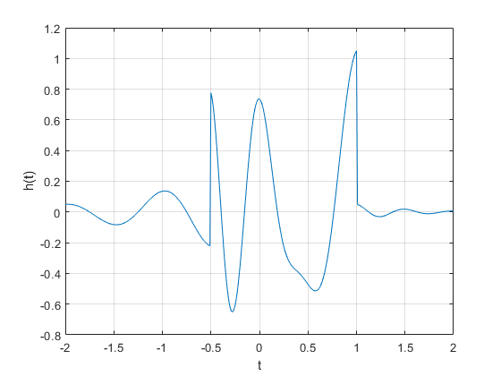

Practica 1 Señales en tiempo continuo
Integrantes:
- Betanzos Ferrando Melvin Emiliano
- García becerril Luis Ángel Ian
- Rosales Perez Paola Monserrat
Grupo: 2MV1
Contents
- Objetivos:
- Introduccion
- Problema 1
- M1.1 Funciones en linea
- M1.1 Parte 1
- M1.1 parte 2
- M1.2 Operadores de relacion y escalon unitario
- M1.2 Parte 1
- M1.2 Parte 2
- M1.2 Parte 3
- M1.3 Visualizacion de operadores con variables independientes.
- M1.3 Parte 1
- M1.3 Parte 2
- M1.3 Parte 3
- M1.4 Integracion numerica y energia estimada.
- M1.4 Parte 1
- M1.4 Parte 2
- M1.4 Parte 3
- Problema 2
- Problema numero 2
- Parte 1
- Parte 2
- Parte 3
- Parte 4
- Parte 5
- Parte 6
- Problema 3
- Formula 1
- Formula 2
- Formula 3
Objetivos:
Introduccion
Problema 1
Realiza los problemas de la seccion M1.1 a M1.4 de lathi.
M1.1 Funciones en linea
M1.1 Parte 1
si tomamos en cuenta la siguiente funcion f(t) = e^?t cos(2?t). el codigo en matlab seria el siguiente:
f = @(t) exp(-t).*cos(2*pi.*(t)); t = (-2:2); f(t); plot(t,f(t)); xlabel ('t'); ylabel('f(t)'); grid;
M1.1 parte 2
como se puede observar en la grafica, MATLAB une los puntos del vector t con el resultado que arroja la funcion, creando una representacion no muy exacta, por lo cual se debe de definir un vector t con intervalos mas pequeños para que sean mas puntosy por lo tanto este mas definida.
f = @(t) exp(-t).*cos(2*pi.*(t)); t=(-2:0.01:2); plot(t,f(t)); xlabel ('t'); ylabel('f(t)'); grid;
M1.2 Operadores de relacion y escalon unitario
M1.2 Parte 1
Dentro del Matlab existen varios operadores los cuales se encargan de relacionar o realizar operaciones en este caso son: <, >, <=, >=, ==, y ~=. El siguiente ejemplo es un escalon unitario, definido de la siguiente manera:
u=@(t) (t>=0); t = (-2:2); plot (t,u(t)); xlabel('t'); ylabel('u(t)');
M1.2 Parte 2
En la grafica anterior se presenta el problema de que el escalon unitario presenta una inclinacion, esto puede ser solucionado con el comando axis. De igual manera la definicion no es muy exacta por lo cual se pueden agregar mas numeros al vector t.
u=@(t) (t>=0); t = (-2:0.01:2); plot (t,u(t)); xlabel('t'); ylabel('u(t)'); axis ([-2 2 -0.1 1.1]);
M1.2 Parte 3
MATLAB tambien contiene relaciones y,o,negaciones; representadas como & | y ~ respectivamente, el siguiente ejemplo es un pulso representado con la ecuacion p(t) =u(t)-u(t-1).
p =@(t) (t>=0) & (t<1); t = (-1:0.01:2); plot(t,p(t)); xlabel('t'); ylabel('p(t)=u(t)-u(t-1)'); axis ([-1 2 -.1 1.1]);
M1.3 Visualizacion de operadores con variables independientes.
M1.3 Parte 1
Para poder multiplicar un vector en cuanto a formulas en matlab se ultiliza la notacion .*, en el siguiente ejemplo se estara grtaficando la funcion :g(t) = f(t)u(t) = e-t cos(2?t)u(t)
g = @(t) (exp(-t).*cos(2*pi*t).*(t>=0)); t = (-2:0.01:2); plot(t,g(2*t+1)); xlabel('t'); ylabel('g(2t+1)'); grid;
M1.3 Parte 2
en este casi graficaremos la misma funcion anterior pero con g(?t + 1) en el intervalo (-2 ? t ? 2).
g = @(t) (exp(-t).*cos(2*pi*t).*(t>=0)); t = (-2:0.01:2); plot(t,g(-t+1)); xlabel('t'); ylabel('g(-t+1)'); grid;
M1.3 Parte 3
Ahora graficaremos la funcion h(t) =g(2t + 1) + g(-t + 1) en el mismo intervalo
g = @(t) (exp(-t).*cos(2*pi*t).*(t>=0)); t = (-2:0.01:2); plot(t,g(2*t+1) +g(-t+1)); xlabel('t'); ylabel('h(t)'); grid;
M1.4 Integracion numerica y energia estimada.
M1.4 Parte 1
Considerando la señal x(t) = e?t(u(t) ? u(t ? 1)). la energia se expresa de la siguiente manera: Ex = integradl de ??? |x(t)|2 dt = integral de 10 e?2t La cual se representa en MATLAB como:
x =@(t) exp(-t).*((t>=0)&(t<1)); t = (0:0.01:1); E_x =sum(x(t).*x(t)*0.01); E_x
E_x =
0.4367
M1.4 Parte 2
Para poder integrar de manera mas precisa se utiliza el operador quad con una funcion que explique la integral como se muestra a continuacion:
x_squared =@(t) exp(-2*t).*((t>=0)&(t>1)); E_x = quad(x_squared,0,1); E_x
E_x =
0
M1.4 Parte 3
A continuacion usaremos una nueva funcion para definirla de manera mas acertiva.
g_squared =@(t) exp(-2*t).*(cos(2*pi*t).*2).*(t>=0); t = (0:0.001:100); E_g = sum(g_squared(t)*0.001); E_g
E_g =
0.0930
Problema 2
Resuelve el problema 1.2.2 usando las herramientas Problema anterior.
Problema numero 2
Parte 1
a continuacion definirimos la grafica original para despues poder meter un corrimiento segun lo indica el problema.
x=@(t) (-t).*(t>=-4)& (t<=0) ; y=@(t) (t).*(t<=2) & (t>=-4); t= (-4:1:2); hold off plot (t,y(t)); hold on plot (t,x(t)); hold off
Parte 2
Ahora graficaremos con x(t-4)
x=@(t) (-t).*(t>=-4)& (t<=0) ; y=@(t) (t).*(t<=2) & (t>=-4); t= (-4:1:2); hold off plot (t,y(t-4)); hold on plot (t,x(t-4)); hold off
Parte 3
Ahora se graficara con x(t/1.5)
x=@(t) (-t).*(t>=-4)& (t<=0) ; y=@(t) (t).*(t<=2) & (t>=-4); t= (-4:1:2); hold off plot (t,y(t/1.5)); hold on plot (t,x(t/1.5)); hold off
Parte 4
Ahora se graficara con x(-t)
x=@(t) (-t).*(t>=-4)& (t<=0) ; y=@(t) (t).*(t<=2) & (t>=-4); t= (-4:1:2); hold off plot (t,y(-t)); hold on plot (t,x(-t)); hold off
Parte 5
Ahora se graficara con x(2t-4)
x=@(t) (-t).*(t>=-4)& (t<=0) ; y=@(t) (t).*(t<=2) & (t>=-4); t= (-4:1:2); hold off plot (t,y(2*t-4)); hold on plot (t,x(2*t-4)); hold off
Parte 6
Ahora se graficara con x(2-t)
x=@(t) (-t).*(t>=-4)& (t<=0) ; y=@(t) (t).*(t<=2) & (t>=-4); t= (-4:1:2); hold off plot (t,y(2-t)); hold on plot (t,x(2-t)); hold off
Problema 3
%onstruya una función que gráfique funciones de R==>R en el %formato de su elección y pruebe su código para mostrar las gráficas de las %fórmulas 1, 2 y 3 de la tabla que se encuentra en al sección de %tranformada de Fourier con el valor de a=1/2 y n=2
Formula 1
Para la formula (e^-at)u(t) del intervalo -5<t<20
a= 1/2; f=@(t) exp(-a*t).*(t>=0); t = (-5:0.1:20); plot(t,f(t));
Formula 2
Para la formula t(e^-at)u(t) del intervalo -5<t<20
a= 1/2; f=@(t) t.*exp(-a*t).*(t>=0); t = (-5:0.1:20); plot(t,f(t));
Formula 3
Para la formula (t^n)(e^-at)u(t) del intervalo -5<t<20
a= 1/2; n= 2 f=@(t) (t.^(n)).*exp(-a*t).*(t>=0); t = (-5:0.1:20); plot(t,f(t));
n =
2